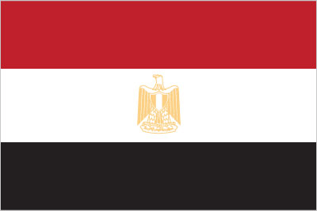
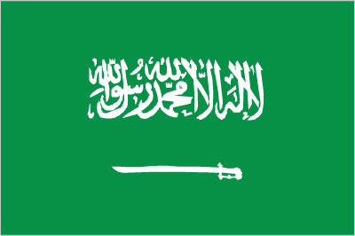
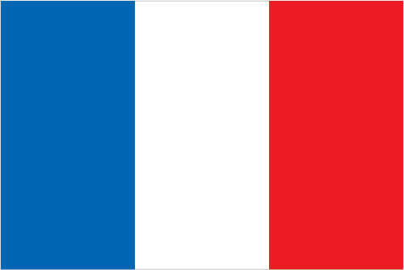
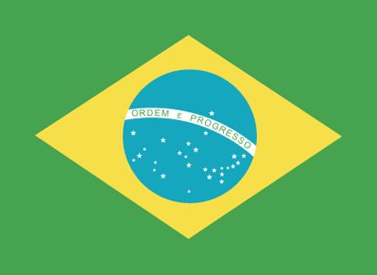

Egypt,[e] officially the Arab Republic of Egypt, is a country spanning the northeast corner of Africa and southwest corner of Asia via the Sinai Peninsula
Egypt
Saudi Arabia[e]officially the Kingdom of Saudi Arabia, is a country located in the Middle East on the Arabian Peninsula bordered by the Red Sea to the west and the Arabian Gulf to the east.
Saudi Arabia
France[e] officially the French Republic, is a country located in Western Europe, with overseas regions and territories, and is bordered by the Atlantic Ocean and the Mediterranean Sea.
France
United States[e] officially the United States of America, is a country primarily located in North America, bordered by Canada to the north and Mexico to the south.
Brazil,[c] officially the Federative Republic of Brazil,[d] is the largest country in South America.
Brazil
Australia, officially the Commonwealth of Australia, is a country comprising the mainland of the Australian continent, the island of Tasmania and numerous smaller islands.
Australia